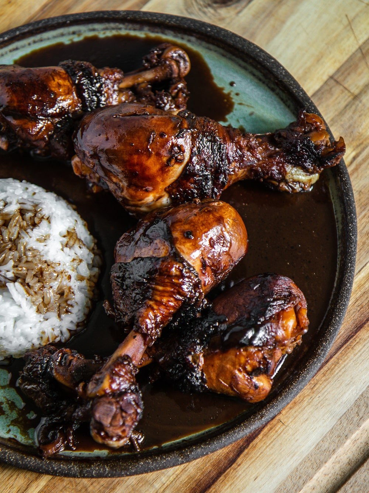
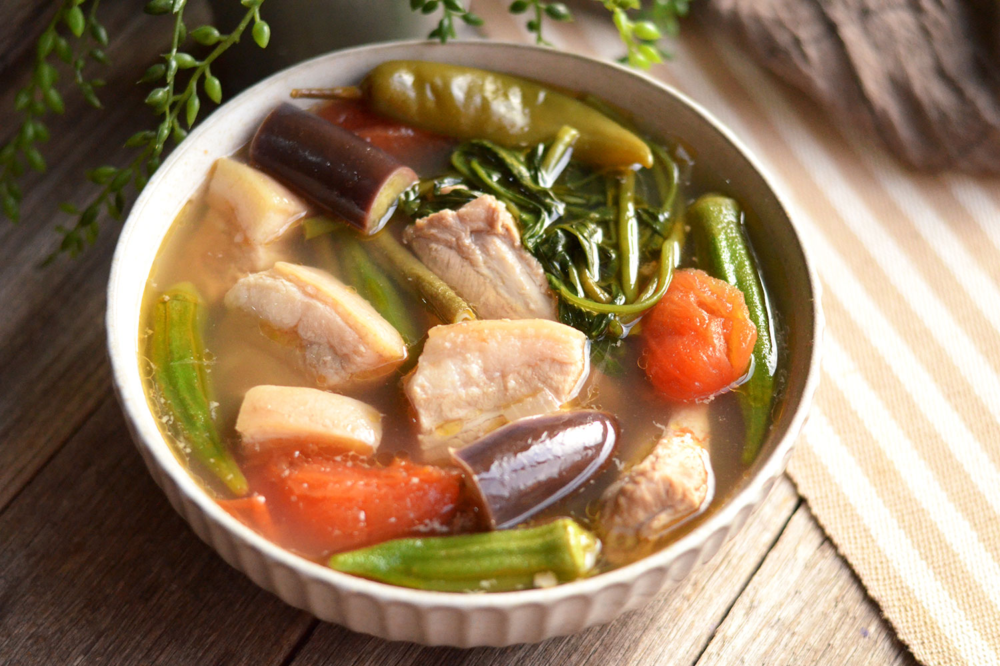
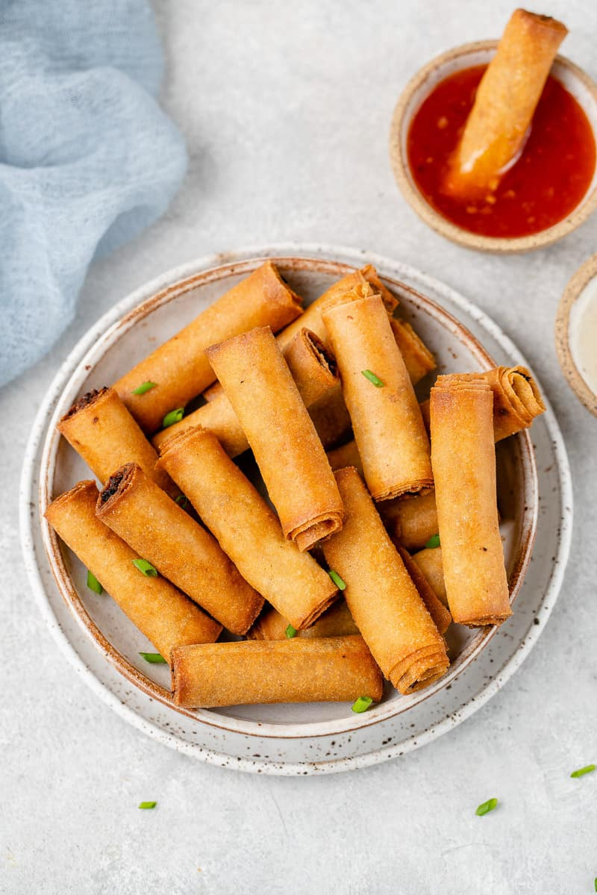
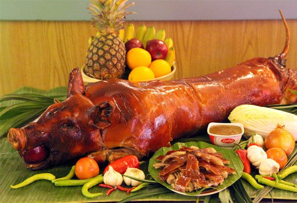
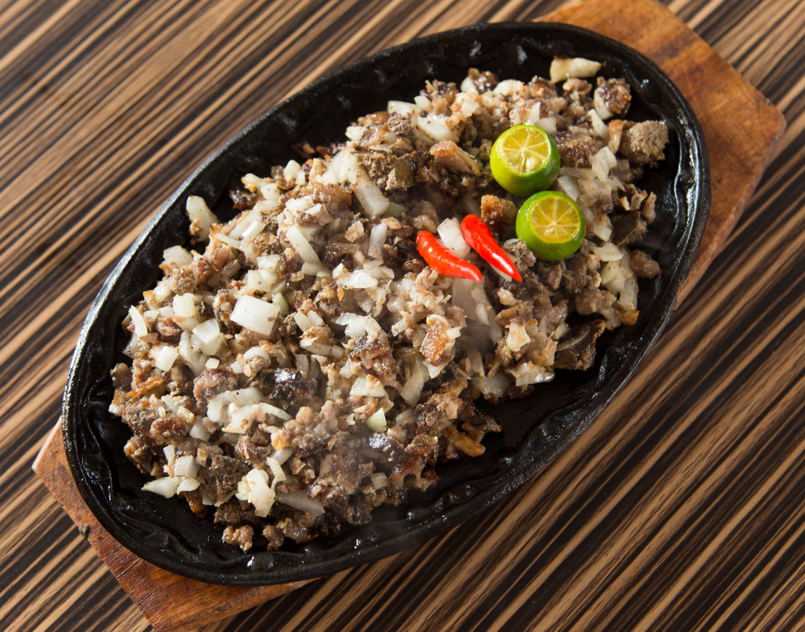
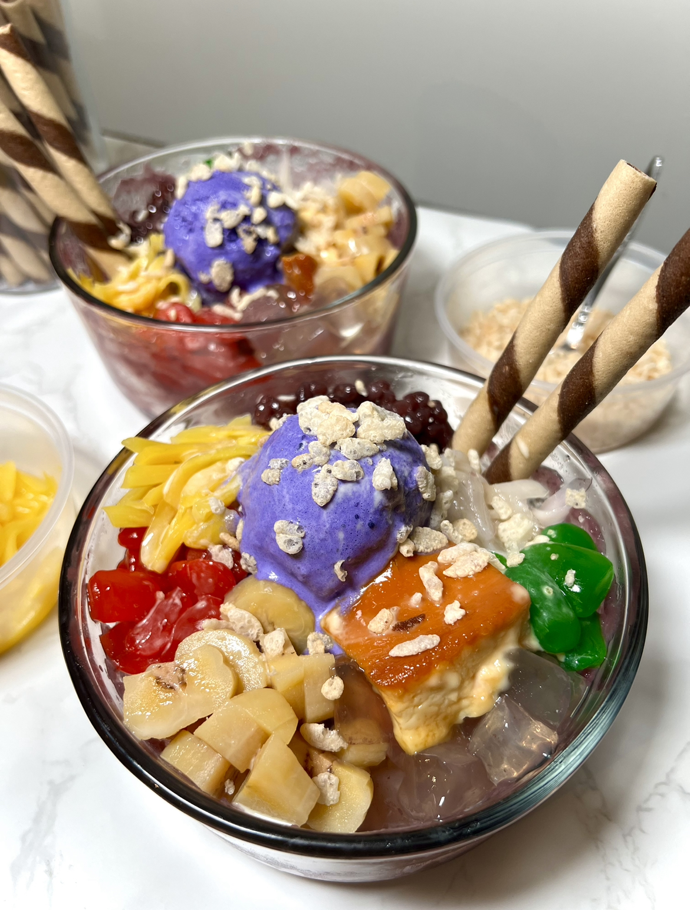
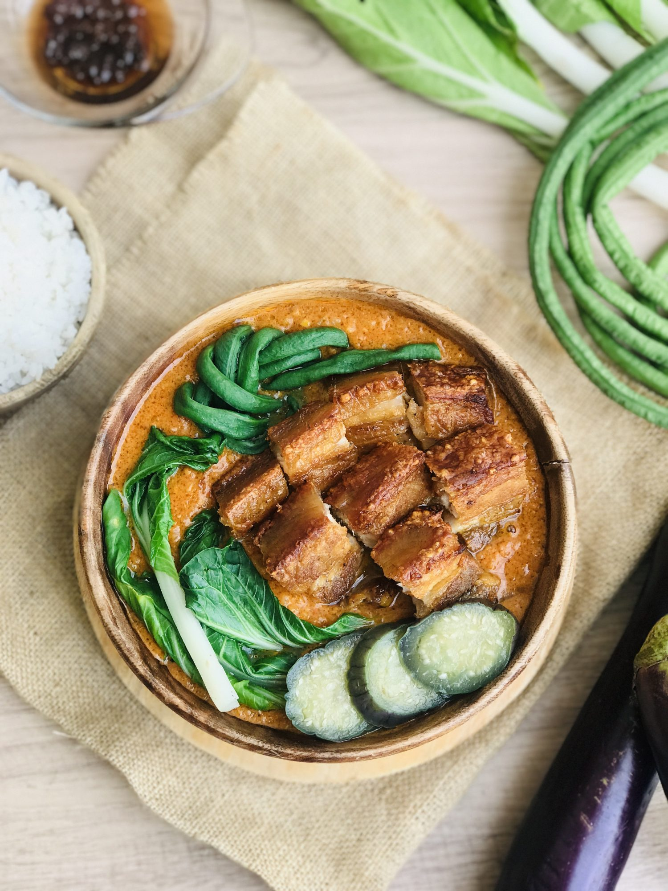
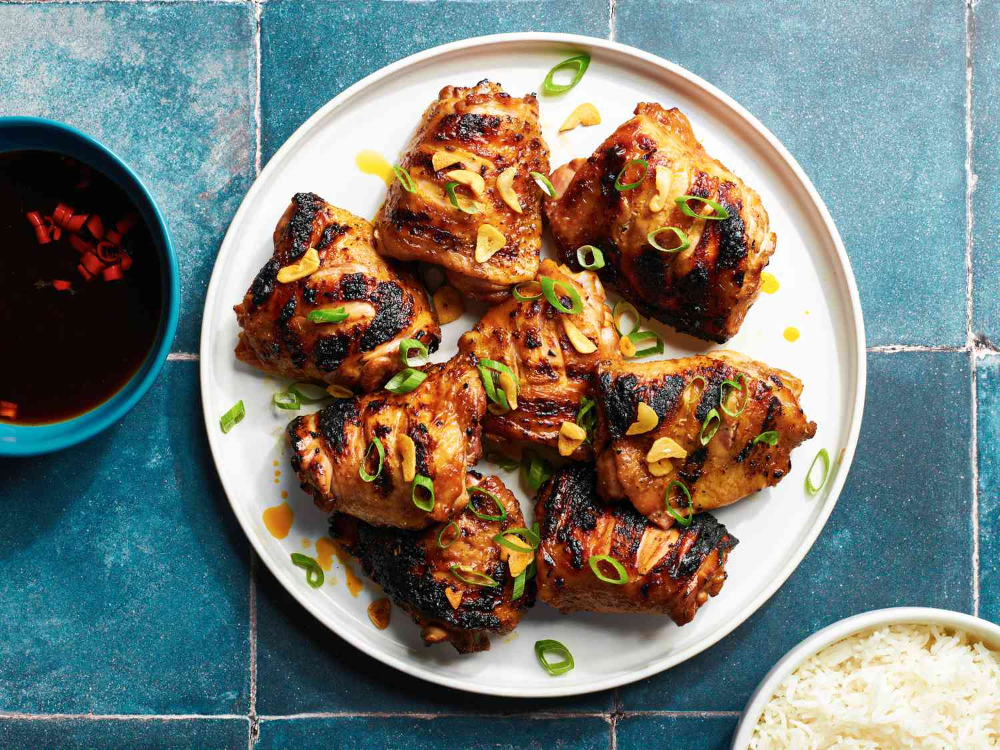
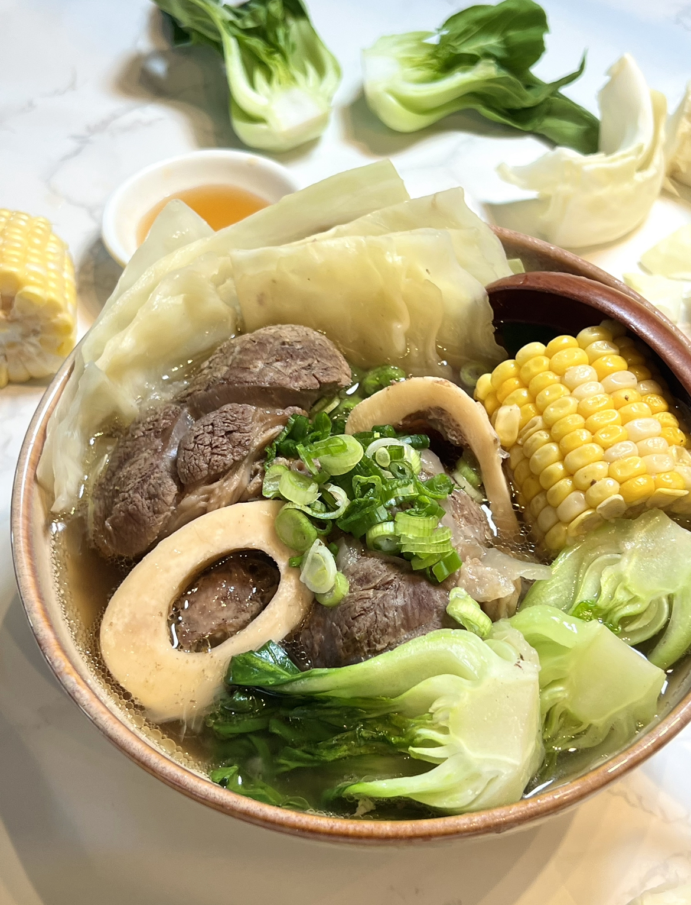
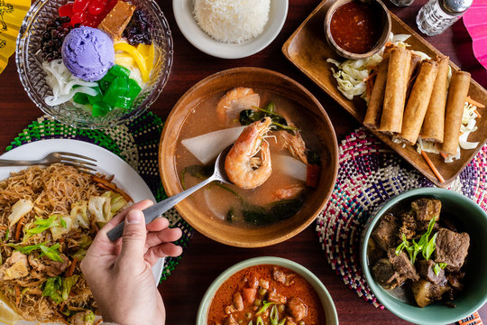

Discover
Authentic flavors. Rich culture.
The taste of the Philippines, in every bite.
☀️ KainWorld Food Guide
Explore our most loved dishes, from classic favorites to delicious Filipino specialties.

🇵🇭 Classic FavoriteA classic Filipino dish of tender chicken simmered in soy sauce, vinegar, garlic and spices.

Regional FavoriteA tangy and savory Filipino soup made with meat, vegetables and tamarind.

Street FavoriteCrispy Filipino spring rolls filled with seasoned meat and vegetables.

Fiesta FavoriteA famous Filipino roasted pork dish known for its crispy skin and flavorful meat.

Pampanga FavoriteA savory Filipino dish made with chopped pork, onions, chili and calamansi.

Dessert FavoriteA colorful Filipino dessert made with shaved ice, milk, fruits and sweet toppings.

Filipino ClassicA rich Filipino stew made with tender beef, vegetables and a flavorful peanut sauce.

Grilled FavoriteA popular Filipino grilled chicken marinated with vinegar, calamansi, garlic and spices.

Filipino SoupA comforting Filipino beef soup made with tender beef shank, bone marrow, and vegetables.
A smooth Filipino custard dessert made with egg yolks, condensed milk, and caramelized sugar.

☀️ ABOUT KAINWORLD
KainWorld is your gateway to the rich and diverse flavors of the Philippines. We bring traditional recipes, regional favorites and authentic Filipino dishes to food lovers around the world.
KainWorld is a place to discover the rich flavor, recipes and culture of Filipino food.
Explore traditional dishes, learn about their ingredients and discover the stories behind Filipino cuisine.